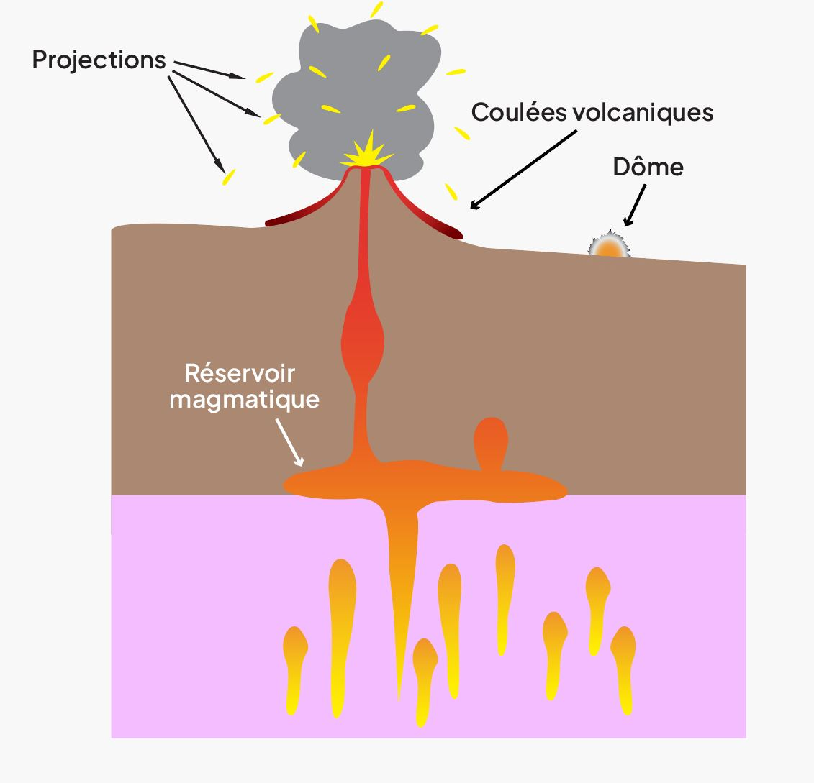
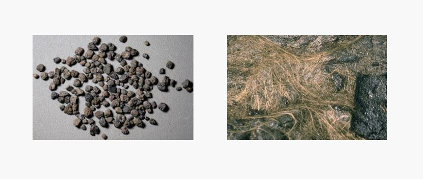

• Magmatisme
Du magma à la roche
Un même magma peut donner des roches différentes selon la profondeur de solidification et le type d’éruption qui l’amène à la surface. Lorsque le magma remonte, il reste souvent bloqué dans la croûte terrestre et s’accumule près des réservoirs magmatiques, où il cristallise lentement.
Cela donne des roches entièrement cristallisées, imbriquées les unes dans les autres, comme le gabbro et le granite.
Une partie du magma arrive à la surface. Selon sa viscosité et la quantité de gaz qu’il contient, il forme des roches différentes : pour une faible viscosité, une coulée de lave contenant des basaltes ou la rhyolite est formée.

Au contraire, pour une forte viscosité, il se forme des coulées d’obsidienne ou des dômes volcaniques. Le gaz contenu dans la lave joue un rôle important dans le dynamisme de l’éruption. S’ils sont libérés brutalement, ils projettent des bombes volcaniques, des lapillis (petits fragments de lave), des cheveux de Pelé (filaments de lave), des ponces et des cendres.
Enfin, lorsque la lave s’introduit dans des fissures sous terre, elle refroidit plus rapidement qu’en profondeur, mais plus lentement qu’en surface. On assiste à la formation de roches différentes, comme la dolérite, très peu vitreuse et avec une granulosité intermédiaire entre le granit et le basalte.
Lapilis et Cheveux de Pelé 